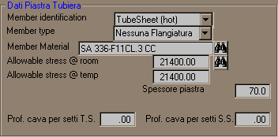
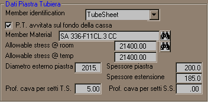

Nel caso di piastra tubiera per tubi ad U con estensione flangiata lato mantello, il pannello dei dati assume il seguente aspetto:

L'opzione Piastra avvitata sul fondo cassa permette di specificare la geometria nella quale la piastra è fissata con prigionieri su di un risalto dell'anello fucinato alla base della cassa. In questo caso non sarà disponibile la finestra a discesa per la selezione del flangione accoppiato nel pannello dei dati sulle giunzioni flangiate.